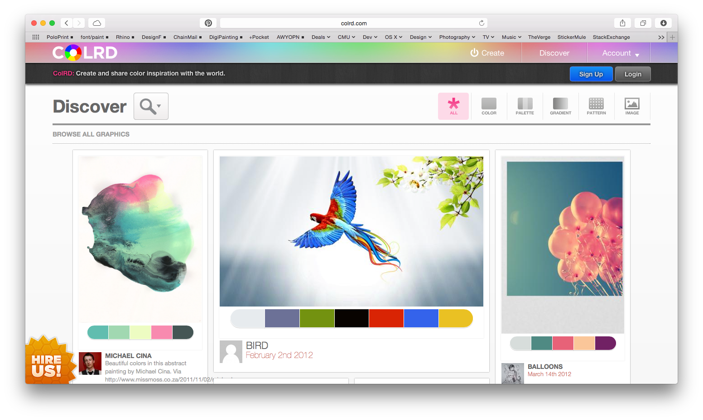

Proposal
Current State of Affairs / Context
The most widely used tool in the same market is color.adobe.com.
It has a minimal user interface that uses seven color ‘rules’ that lets the users create a color scheme comprised of five colors. The color rules are analogous, monochromatic, triad, complementary, compound, shades, and custom.
The main component of the UI is the central color wheel which you can use to make selections that change within a color “rule”. The palette can also be modified by using the RGB sliders, RGB value entry, or the HEX value entry, at the bottom of each swatch. Again, the color rule constrains the changes made to the palette.
Analogous colors are adjacent to each other on the color wheel with one main color and four accent colors. The main color is highlighted in the UI, placed in the middle by default, with the accent colors flanking it.
Monochromatic colors are from a single hue that vary in tints and shades of the main color.

Triad colors are usually three colors that are of equal distance from each other on the color wheel. Adobe Color gives five colors by varying the hue of the first three colors.
Complementary colors are direct opposites on the color wheel.
Compound color scheme gives highly contrasting colors of hues that are in the range of complementary colors.
The shades option lets the user pick one main color and returns five different shades.

Another tool that is currently utilized is COLRD.com, which is a public community of color palettes that lets the user upload an image from which CORLD generates a color palette. There are options as to how many swatches are picked out per image and the user can shuffle the hidden color rule. It generates a library of the colors used in the image and presents it in 12 hues. These palettes and images can be stored to the user’s account. However, the UI is inconvenient because it does not let the user navigate between functions without returning to the homepage. Also, COLRD does not show what color rule it is using to generate the palettes.
It has a minimal user interface that uses seven color ‘rules’ that lets the users create a color scheme comprised of five colors. The color rules are analogous, monochromatic, triad, complementary, compound, shades, and custom.
The main component of the UI is the central color wheel which you can use to make selections that change within a color “rule”. The palette can also be modified by using the RGB sliders, RGB value entry, or the HEX value entry, at the bottom of each swatch. Again, the color rule constrains the changes made to the palette.
Color Theory
Analogous colors are adjacent to each other on the color wheel with one main color and four accent colors. The main color is highlighted in the UI, placed in the middle by default, with the accent colors flanking it.
Monochromatic colors are from a single hue that vary in tints and shades of the main color.
Triad colors are usually three colors that are of equal distance from each other on the color wheel. Adobe Color gives five colors by varying the hue of the first three colors.
Complementary colors are direct opposites on the color wheel.
Compound color scheme gives highly contrasting colors of hues that are in the range of complementary colors.
The shades option lets the user pick one main color and returns five different shades.
Another tool that is currently utilized is COLRD.com, which is a public community of color palettes that lets the user upload an image from which CORLD generates a color palette. There are options as to how many swatches are picked out per image and the user can shuffle the hidden color rule. It generates a library of the colors used in the image and presents it in 12 hues. These palettes and images can be stored to the user’s account. However, the UI is inconvenient because it does not let the user navigate between functions without returning to the homepage. Also, COLRD does not show what color rule it is using to generate the palettes.
Hypothesis / Projections
Our goal is to create a web-based tool that assists designers in creating and storing color themes.
Our tool has Social, cultural, and professional relevance to the future of design disciplines. The Web-based aspect creates a collaborative playground for both professional designers and hobbyists. This tool can foster a culture of progressive designers with creative inquiry for effective use of colors in their projects and presentations. A clean and simple UX would allows designers to efficiently create cohesive visualizations.While improving on existing systems by reducing the cumbersomeness, we aim to create an all-encompassing tool that not only helps the design process but also educates the users of the knowledge in colorspace.
This color tool can develop from a simple web-based tool that is currently a basic color picker and storage to serve a broader role in assisting people with any types of intentions. The tool has the potential to grow into a more interactive interface in the future. The tool can not only pick out apparent swatches from uploaded images but could further recommend palettes according to the user’s mood, or preferences according to web pages he or she has visited through data collection.
In the same way that Corning tries to revolutionize the use of glass in there video, we hope to have our tool being used in more than “design” situations, meaning in everyday life and more things that you would not necessarily see as a place where color can influence. Another similar tie that can be made is how Hong Kong changed the way skylines were displayed by using the buildings as a canvas for light shows, no one had thought of this before Hong Kong and we hope to do the same with in the color space expanding on existing color theory but again going broader than the strict design field. One use case I can see 30 years down the road is with in textiles. Fabrics will be able to adjust colors on the fly and its not so much at that point which color to change to, but how to change to the color. At what rate should it change through which other colors should it change to using what gradient or feelings.
Our tool has Social, cultural, and professional relevance to the future of design disciplines. The Web-based aspect creates a collaborative playground for both professional designers and hobbyists. This tool can foster a culture of progressive designers with creative inquiry for effective use of colors in their projects and presentations. A clean and simple UX would allows designers to efficiently create cohesive visualizations.While improving on existing systems by reducing the cumbersomeness, we aim to create an all-encompassing tool that not only helps the design process but also educates the users of the knowledge in colorspace.
This color tool can develop from a simple web-based tool that is currently a basic color picker and storage to serve a broader role in assisting people with any types of intentions. The tool has the potential to grow into a more interactive interface in the future. The tool can not only pick out apparent swatches from uploaded images but could further recommend palettes according to the user’s mood, or preferences according to web pages he or she has visited through data collection.
In the same way that Corning tries to revolutionize the use of glass in there video, we hope to have our tool being used in more than “design” situations, meaning in everyday life and more things that you would not necessarily see as a place where color can influence. Another similar tie that can be made is how Hong Kong changed the way skylines were displayed by using the buildings as a canvas for light shows, no one had thought of this before Hong Kong and we hope to do the same with in the color space expanding on existing color theory but again going broader than the strict design field. One use case I can see 30 years down the road is with in textiles. Fabrics will be able to adjust colors on the fly and its not so much at that point which color to change to, but how to change to the color. At what rate should it change through which other colors should it change to using what gradient or feelings.
Problems / Opportunities
As architects and designers, color is an important communication tool. Which seems to be left until the last minute of presentation production. Designers tend to depend on their intuition but oftentimes it is hard to understand why certain colors are more effective than others. One example we have personally seen is the randomness used when selecting colors, mostly on the basis that its a color swatch in the swatches panel in all the applications, resulting in a poor color choice purely for convenience sake. This leaves an opportunity to create a convenient and easy to use tool that helps to generate color schemes and show the resulting color theory behind it. In the same way SwatchMate brings life back into capturing colors from your environment, we want Cameleon to be the tool that brings color back to color.
A challenge is explaining the color theory through the UI without having the users to read a textbook. It should let the users to easily create the color palettes while subliminally explaining the rules behind the palette.
A challenge is explaining the color theory through the UI without having the users to read a textbook. It should let the users to easily create the color palettes while subliminally explaining the rules behind the palette.
Research / Implementation Documentation
We started out our research with looking at the tools that we use often. As architecture students, we use color.adobe.com when creating diagrams and presentation boards that are appealing and easy to read. Creating one’s own palette by using the color wheel and color rules is the basic function of color.adobe.com, but the “Explore” function which is a library that organizes themes into different categories is something that is very helpful. This function, made possible because the website is online and invites everyone to create their own library, is effective because we can see color palettes that people tend to enjoy. This led us to include the “community” tab on our color tool.
In order to understand the rules that generate the color palettes, we studied Josef Albers’s color theory. After understanding these rules, it became easier for us the think about the hierarchy among different features that might be in our tool.
Some color websites we looked at were not mobile friendly. In today’s world in which the smartphone is more accessible than a desktop or a laptop, this is a critical need. From trying out different websites and mobile apps such as Sip Color and Abode Color, we shared thoughts on what makes these applications successful, or inconvenient. Being mobile-friendly generally made the tools more interactive. Users can take photos more freely with their phone and the tools pick out colors directly on the phone. Applications like Adobe Color Lava is a highly interactive tool that allows more freedom to a hands-on approach in finding the right swatches for the user’s intentions and purposes through mixing colors and exploring the world of colors.
Learning Javascript enabled us to utilize existing tool like Tiny Color as a stepping stone. Reading the code that generates palettes on Tiny Color, we manipulated the UI for our demo. Tiny Color stores a list of color names that users can type in. In order to increase the list of names, we used data scraping so that we could add them to the Tiny Color’s library and improve on the usability and range of emotional language within color.
In order to understand the rules that generate the color palettes, we studied Josef Albers’s color theory. After understanding these rules, it became easier for us the think about the hierarchy among different features that might be in our tool.
Some color websites we looked at were not mobile friendly. In today’s world in which the smartphone is more accessible than a desktop or a laptop, this is a critical need. From trying out different websites and mobile apps such as Sip Color and Abode Color, we shared thoughts on what makes these applications successful, or inconvenient. Being mobile-friendly generally made the tools more interactive. Users can take photos more freely with their phone and the tools pick out colors directly on the phone. Applications like Adobe Color Lava is a highly interactive tool that allows more freedom to a hands-on approach in finding the right swatches for the user’s intentions and purposes through mixing colors and exploring the world of colors.
Learning Javascript enabled us to utilize existing tool like Tiny Color as a stepping stone. Reading the code that generates palettes on Tiny Color, we manipulated the UI for our demo. Tiny Color stores a list of color names that users can type in. In order to increase the list of names, we used data scraping so that we could add them to the Tiny Color’s library and improve on the usability and range of emotional language within color.